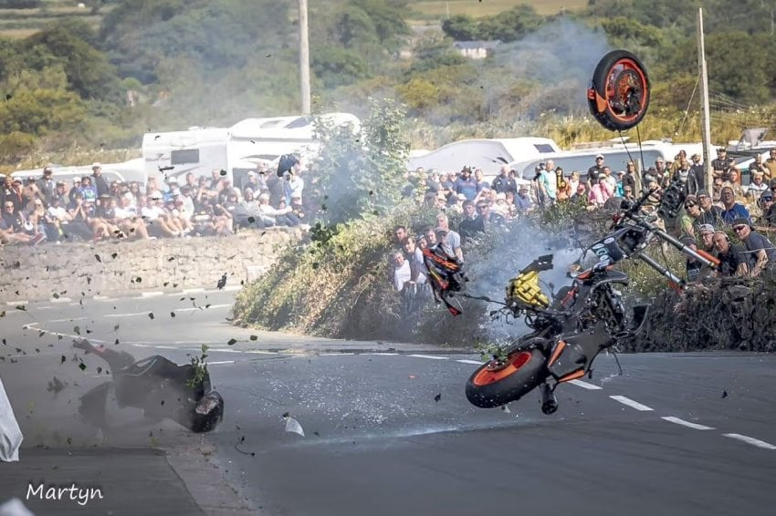
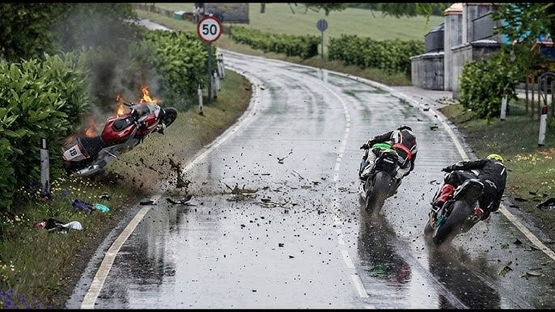
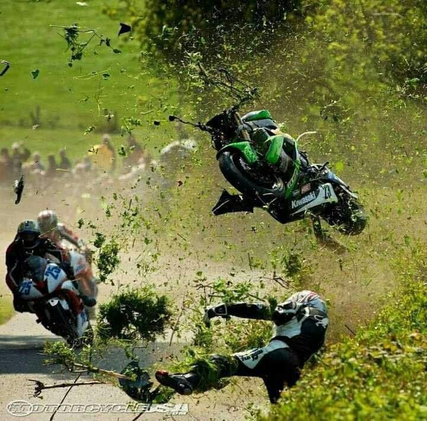

영국 맨 섬에서 열리는 일명 맨섬TT 경기
공도에서 평균 210km, 최고 330km를 넘나드는 상남자들의 모터스포츠



1937년 코스가 확립된 공식 경기이후로
1982년, 2024년, 2025년 딱 세 번만 사망사고가 나오지 않았다!
대회 당 평균 사망자 수 2명!
현재까지 총 273명이 사망했다!
올해는 예선에서 벌써 2명이나 사망
영국 맨 섬에서 열리는 일명 맨섬TT 경기
공도에서 평균 210km, 최고 330km를 넘나드는 상남자들의 모터스포츠



1937년 코스가 확립된 공식 경기이후로
1982년, 2024년, 2025년 딱 세 번만 사망사고가 나오지 않았다!
대회 당 평균 사망자 수 2명!
현재까지 총 273명이 사망했다!
올해는 예선에서 벌써 2명이나 사망
전투중에 죽으면 발할라간다는 바이킹마냥 오토바이타다 죽으먼 호상이라고 할듯
사실상 가장 위험한 스포츠임... 대회때마다 죽으니
시발 안 죽는 게 신기하네
아니 코스 관리하는 서킷도 아니고 그냥 일반 공도에서 저런다고? ㅁㅊ ㅋㅋㅋㅋㅋ
걍 누구 죽이려는 대회네 ㅋㅋㅋㅋㅋㅋㅋㅋㅋㅋ 개웃기네ㅋㅋㅋㅋㅋㅋㅋㅋㅋ
매년 확정적으로 사람 죽는데 용케 허가나오네
현대판 콜로세움 아니냐ㅋㅋㅋㅋㅋㅋㅋㅋ
죽으면 다행이지 저건 다치면 하반신 마비 패시브로 오겠는데
레이스 경기중에 바이크가 제일 위험한 거 같아 ㄹㅇ;;;
얼마나 사고가 많으면 저기에 정확히 매트가 있냐
이게 왜 합법인겨 ㄷㄷㄷ
저 정도면 상남자가 아니라 예비송장 아니냐
미개하구만
주최측이나 참가측이나 제정신아니네
마크부터 다리 🦵 날아가는 모양이네
스쿠터 타고 서행해도 평균적으로 뒤에서 3등 정도는 가능하단거아녀ㅋㅋ